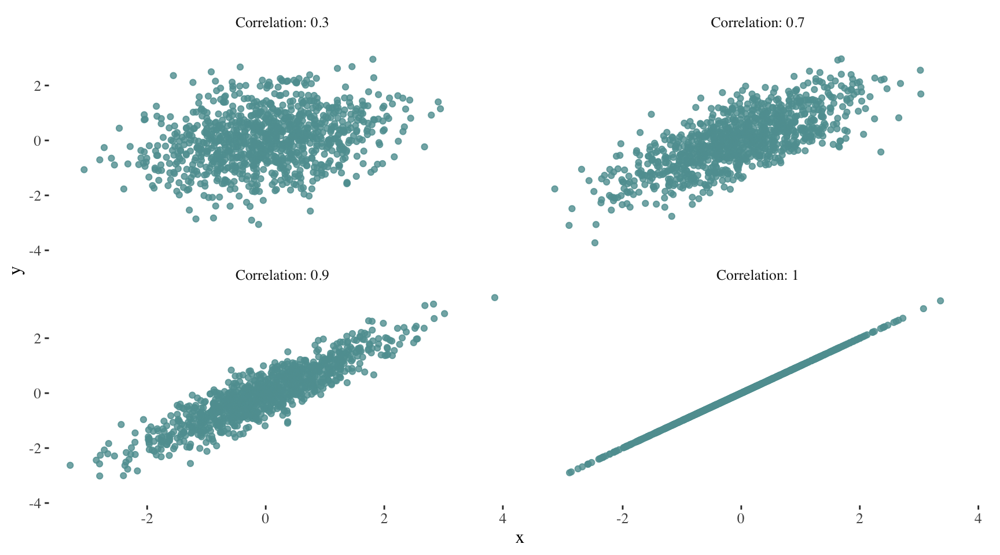
Linear Regression
class notes
Introduction
In this session, we will delve into linear regression, renowned for its simplicity and popularity in statistical analysis. With its analytical solution, it serves as a cornerstone in understanding various statistical models, laying a solid foundation for comprehending more advanced techniques in data analysis and prediction.
Central concepts
Linear and non-linear relationships
When analyzing the relationship between two quantitative variables, linear relationships between two \(X\) and \(Y\) variables can be described by a linear equation such as:
\[ Y = b + mX\]
That is to say, for any value of \(X\) and \(Y\) an increase (decrease) in \(X\) will imply a proportional increase (decrease) in \(Y\). That proportion is given by \(m\).
Correlation
Correlation quantifies the strength and direction of the linear relationship between two variables1. It can take values between -1 (perfect negative relationship) and 1 (perfect positive relationship), with 0 indicating no linear relationship.
As correlation increases, the scatter plot increasingly resembles a line. For example:
Can you imagine how the plot for a correlation of -1 would look like?
The correlation value has no units and will not be affected by a linear transformation in the variables (Çetinkaya-Rundel and Hardin 2021). It is important to remember that correlation does not imply causation.
Simple linear regression
Linear regression is a widely used statistical method to determine the existence of a relationship between an outcome variable and a set of one or more predictor variables, as well as to quantify the strength of that relationship. This technique can also be used for predicting a quantitative response in our outcome variable (James et al. 2013).
Formula and coefficient interpretation
When building a simple linear regression model, we will fit a line to data where the relationship between two variables, \(X\) and \(y\), can be modeled as a straight line with some degree of error following the formula:
\[ y = \beta_{0} + \beta_{1}X + \epsilon\]
\(\beta_{0}\) represents the intercept. How can we interpret this value? It represents the average value of \(y\) when \(X = 0\).
\(\beta_{1}\) is the slope of the line, which indicates the average increases in \(y\) when \(X\) increases by one unit.
\(\epsilon\) represents the error or residual.
\(\beta_{0}\) and \(\beta_{1}\) are the model’s coefficients or parameters. When fitting a line, we may ask ourselves, should we move the line slightly further up or further down? Should the line be steeper or less steep? The first question refers to estimating \(\beta_{0}\). The second question refers to estimating \(\beta_{1}\).
Here’s a graphical representation of the role of \(\beta_{0}\) and \(\beta_{1}\):
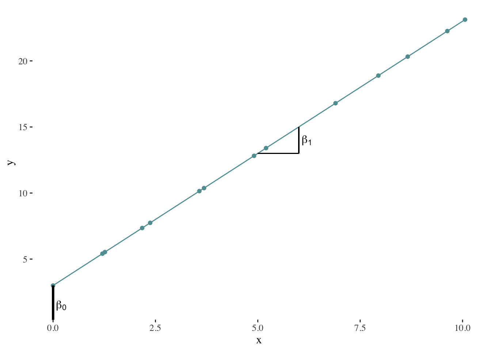
Numeric vs. analytic calculation
When estimating the model’s parameters2, we will try to find a line that minimizes the residuals, that is to say, the difference between our estimation of \(y\) (which we will represent using \(\hat{y_{i}}\)) and its observed value for each \(X\).
\[\epsilon_{i} = y_{i} - \hat{y_{i}}\]
In order to do this, we might rely on numeric or analytic calculation methods. Numeric calculation methods will basically try different combinations of \(\hat{\beta_{0}}\) and \(\hat{\beta_{1}}\) and choose the best possible solution (in this case, the line that minimizes the residuals). On the other hand, analytic calculation methods will solve the mathematical expressions that describe the problem in order to obtain the solution.
Numeric calculation
In order to explain what happens when using numeric methods, we will use an example3 based on the sim1 toy dataset of the modelr package. This is how the data looks like:
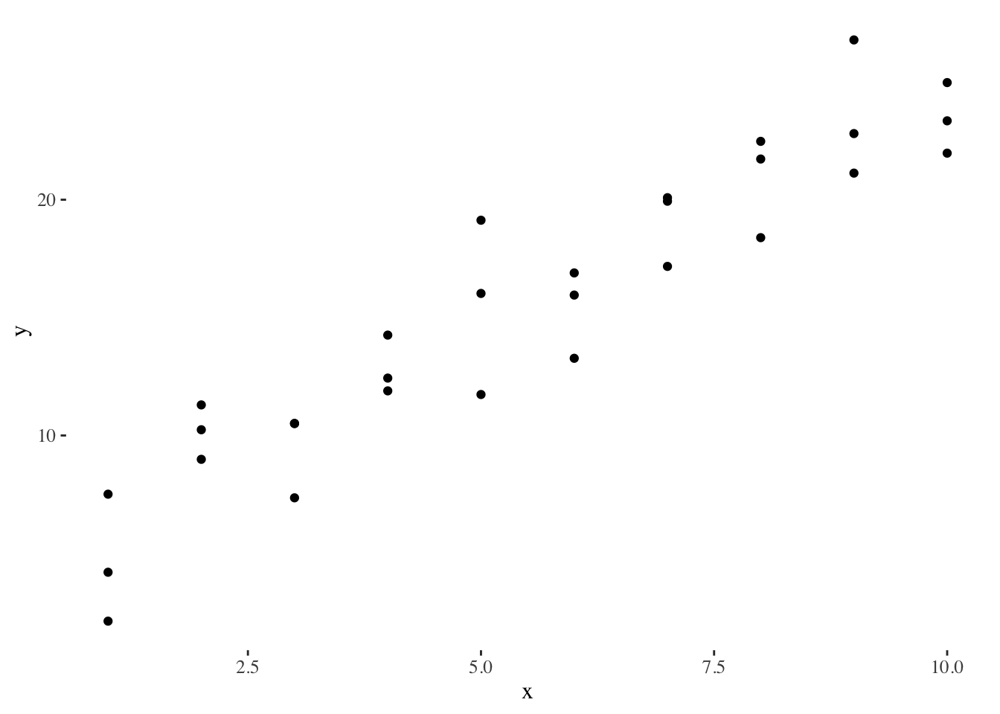
To adjust a linear regression, we can randomly generate several linear models and see what they look like:
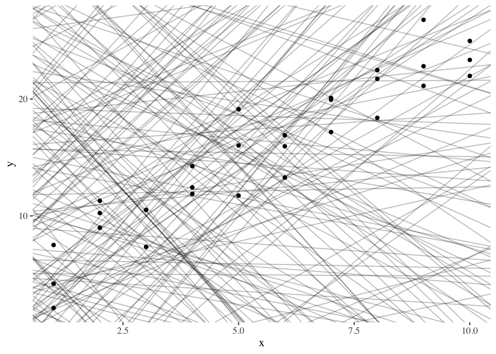
To decide which model is the best one, we try to find a line that minimizes the residuals. We could design a function that describes the residuals and find the set of slope and intercept that minimizes our residuals.
Plotting our best models:
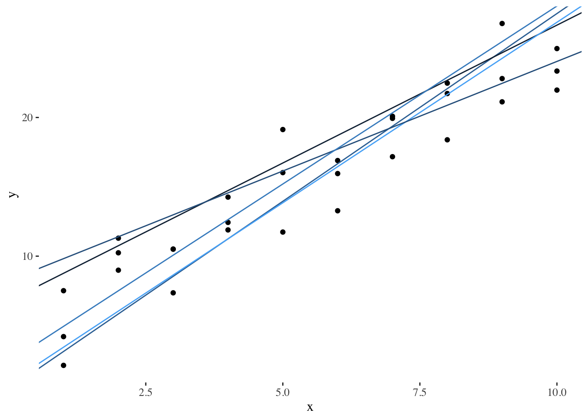
Another way to present our models is to build a scatter plot with all possible combinations of \(\beta_{0}\) and \(\beta_{1}\), while coloring dots according to their residual measure:
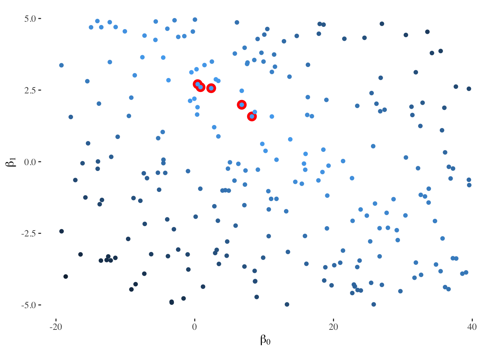
The Newton-Raphson method and gradient descent are more refined numerical optimization techniques used to find the minimum of a function. In the context of linear regression, these methods can be used to iteratively adjust model parameters until the optimal values are reached.
In R, we can use the optim() function to perform these optimization methods. We need to provide the initial parameter values (for example \(\beta_{0} = 0\) and \(\beta_{1} = 0\)) and the objective function to be minimized (in this case, our function describing the residuals). The function will iteratively adjust the parameters, providing the optimized parameter estimates for the linear regression model.
best <- optim(c(0, 0), measure_residuals, data = sim1)In this case, the resulting model would be characterized by the parameters \(\beta_{0} =\) 4.2 and \(\beta_{1} =\) 2.1. Graphically:
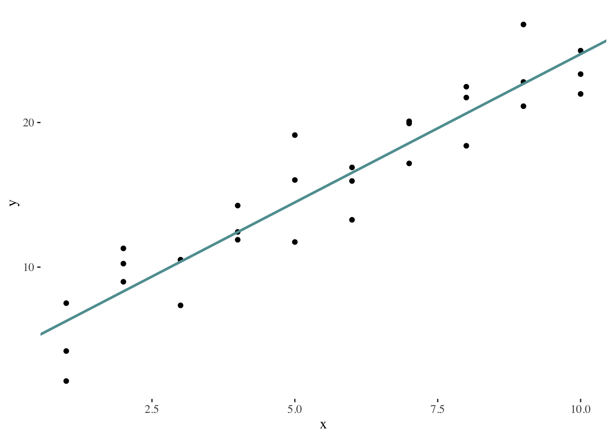
Analytic calculation
The least squares approach is an analytic calculation method that chooses \(\hat{\beta_{0}}\) and \(\hat{\beta_{1}}\) to minimize the residual sum of squares4 (RSS), that is to say, the parameters that describe a line that provides the smallest possible value for this measure:
\[RSS = \sum_{i=1}^n \epsilon^2_{i} = \sum_{i=1}^n (y_{i} - \hat{y}_{i})^2\]
Once we minimize the function describing the residual sum of squares, we will obtain the following formulas describing our statistics5:
\[ \hat{\beta_{1}} = \frac{\sum_i^n (y_i -\bar{y})(x_i -\bar{x})}{\sum_i^n (x_i- \bar{x})} \]
\[ \hat{\beta_{0}} = \bar{y} - \hat{\beta_{1}}\bar{x} \]
Model assumptions
The simple regression model makes several assumptions regarding the variables involved. It is therefore fundamental to assess these assumptions before drawing conclusions from a regression analysis.
The first assumption is that of linearity: there is a linear relationship between the outcome and predictor variable. Consequently, the effect on \(y\) of a variation in \(X\) is the same regardless \(X\)’s value.
The model also assumes that errors are normally distributed with a mean equal to 0 and a constant variance6 (across all levels of the independent variables). On the other hand, it is assumed that errors are independent of each other, and that their distribution is independent of the predictor variables.
Statistical significance
How can we test if the relationship between \(X\) and \(y\) is statistically significant or not? We can formulate a hypothesis test7 with the following hypotheses (James et al. 2013):
\(H_{0}\): “There is no relationship between X and Y”8
\(H_{A}\): “There is a relationship between X and Y”
This is equivalent to saying:
\[ H_{0}: \beta_{1}=0\]
\[ H_{A}: \beta_{1} \neq 0\]
We will consider the relationship between \(X\) and \(y\) to be statistically significant when the p-value of the test is close to 0.
Evaluation
The first step to evaluate our model is to test our assumptions. Synthetically, this can be done by observing the distribution of the model’s residuals. If we can not find any pattern in our residuals, we can confidently interpret our model’s results. Patterns in our residuals may indicate a non-linear relation between \(X\) and \(y\), a lack of independence between the error term and \(X\), etc.
Our expected residual plot should look like:
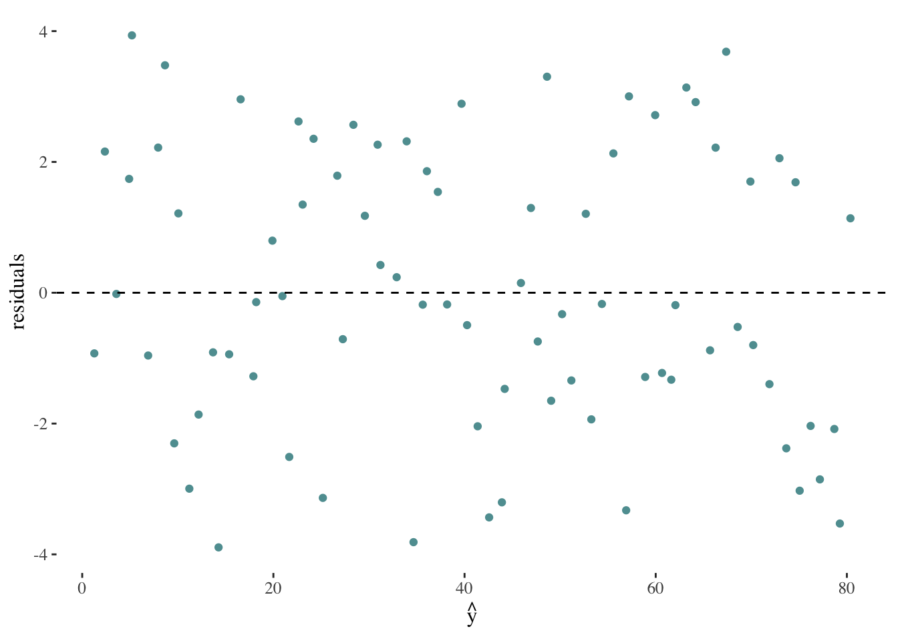
If we encountered a plot such as the following, it would suggest a violation of the assumption of constant variance in the residuals:
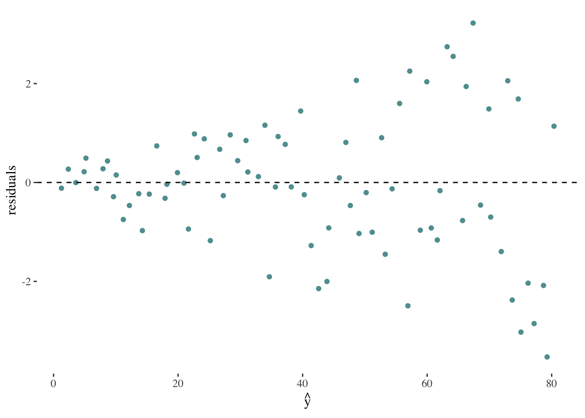
On the other hand, a plot such as the following might indicate the relationship between x and y is not linear:
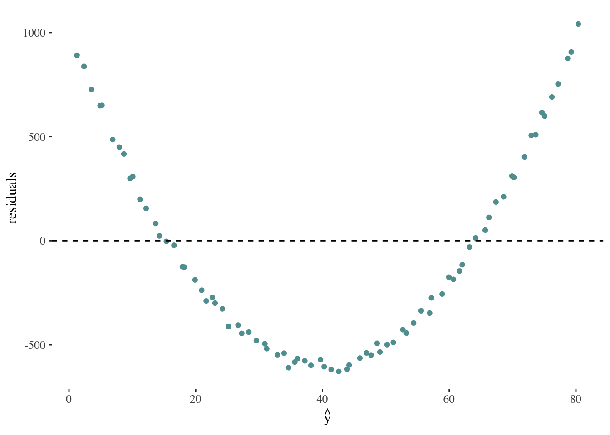
The next step in order to evaluate our model’s capacity to describe the relationship between \(y\) and \(X\), is to calculate the coefficient of determination (denoted as \(R^2\)), which will always take values between 0 and 1. This metric quantifies the proportion of variation in the outcome variable \(y\) that can be explained by the linear model with the predictor variable \(X\).
We can measure the variability in the values of \(y\) by considering how far they tend to deviate from their mean (\(\overline{y}\)). We define this value as the total sum of squares (TSS), which is calculated using the following formula:
\[TSS = (y_{1} - \overline{y})^2 + (y_{2} - \overline{y})^2 + ... + (y_{n} - \overline{y})^2 = \sum_{i=1}^n (y_{i} - \overline{y})^2\]
The remaining variability in the values of \(y\) given \(X\) can be measured by the residual sum of squares (RSS) discussed above:
\[RSS = \sum_{i=1}^n \epsilon^2_{i} = \sum_{i=1}^n (y_{i} - \hat{y}_{i})^2\] Therefore, the coefficient of determination can be obtained using:
\[ R^{2} = \frac{TSS- RSS}{TSS} = 1 - \frac{RSS}{TSS}\]
An \(R^{2}\) statistic that is close to 1 indicates that a large proportion of the variability in the response is explained by the regression. A number near 0 indicates that the regression does not explain much of the variability in the response (James et al. 2013).
Multiple linear regression
Multiple linear regression is a widely used statistical method to determine the existence of a relationship between an outcome variable and a set of one or more predictor variables, as well as to quantify the strength of that relationship. This technique can also be used for predicting a quantitative response in our outcome variable (James et al. 2013).
Formula. Coefficient interpretation
When building a multiple linear regression model, we will estimate a series of parameters describing the linear relationship between a set of \(n\) predictor variables, \(X_{1}\), \(X_{2}\),…, \(X_{n}\) and \(y\), which can be modeled following the formula:
\[ y = \beta_{0} + \beta_{1}X_{1} + \beta_{2}X_{2} + ... + \beta_{n}X_{n} + \epsilon\]
\(\beta_{0}\) represents the average value of \(y\) when \(X_{1} = X_{2} = ... = X_{n} = 0\).
\(\beta_{i}\) indicates the average increases in \(y\) when \(X_{i}\) increases by one unit holding all other predictors (\(X_{1}\), \(X_{2}\),…, \(X_{i-1}\),\(X_{i+1}\),…, \(X_{n}\)) fixed.
\(\epsilon\) represents the error or residual.
Model assumptions
Besides the model assumptions discussed for the simple linear regression, multiple linear regression models must assume the absence of multicollinearity. Multicollinearity refers to the presence of high correlation or linear dependence among the predictors in a regression model.
Multicollinearity poses a problem because when predictors are correlated, it becomes difficult to distinguish and isolate the individual effects of each predictor on the outcome variable. As a result, the coefficients of the model become less precise and can lead us to draw unreliable conclusions.
Categorical predictors
Categorical predictors are built transforming qualitative variables. That is to say, variables that can take one of a limited number of possible values, assigning each observation to a class or category on the basis of some qualitative property. In order to incorporate qualitative variables into regression analysis, we must first transform them into numerical values.
Let’s start with the simplest case: binary qualitative variables (also called dummy variables) can only take one value of two categories (e.g., having received or not certain medical treatment). In this case, we will assign a value of 1 to indicate the presence of the attribute represented by one of the variable’s possible values (for example: having received the medical treatment), and 0 to represent the absence of the attribute (for example: not having received the medical treatment). The group identified with a 0 is referred to as the base or reference category (in this case, the patients that did not received the treatment).
Note that we do not create a dummy variable for each category of our qualitative variable, since that would leave us with redundant information in the model. For example, if we create a dummy variable for “holds a higher degree” (with value 1 to indicate TRUE and 0 for FALSE), and another one for “does not hold a higher degree” (with value 1 to indicate TRUE and 0 for FALSE), they are evidently redundant and each can be predicted from the other one. This relates to the multicollinearity problem mentioned above, and it is called the dummy variable trap.
Let’s consider an example in order to understand how a binary variable contributes to the model. Suppose we have a regression equation given by:
\[ Y = \beta_{0} + \beta_{1}X_{1} + \beta_{2}X_{2} + \epsilon\]
Where \(X_1\) is quantitative (e.g., income) and \(X_2\) is qualitative (e.g., having or not having a higher education degree).
Let’s see what happens for each possible value of \(X_2\):
- If \(X_{2}\) = 1:
\[ Y \approx \beta_{0} + \beta_{1}X_{1} + \beta_{2}\] \[ Y \approx (\beta_{0} + \beta_{2}) + \beta_{1}X_{1}\]
- If \(X_{2}\) = 0:
\[ Y \approx \beta_{0} + \beta_{1}X_{1}\]
So, what is the effect of the inclusion of a qualitative variable in the model? It leads to a shift in the intercept. This can be visualized through a graphical representation9:
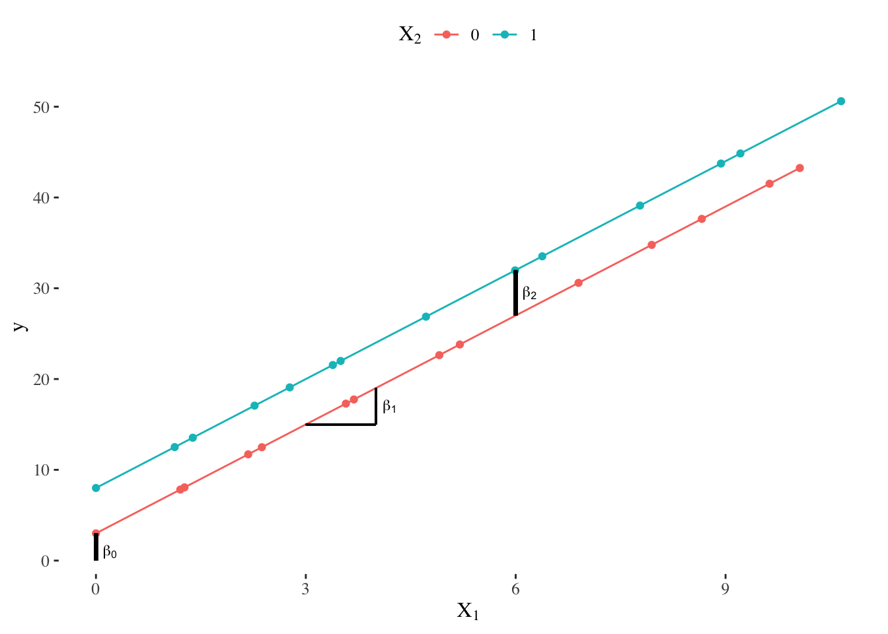
When incorporating a qualitative variable, the coefficient \(\beta_0\) can be interpreted as the intercept for cases where the qualitative variable has a value of 0 (in our example, people who do not have a higher degree), while the coefficient \(\beta_2\) represents the shift in the intercept for cases where the qualitative variable has a value of 1 (in our example, people holding a higher degree).
What approach should be taken when dealing with a qualitative variable that has more than two categories?
For a qualitative variable with \(n\) categories, we will need to create \(n - 1\) dummy variables that take on values of 0 or 1. The reference category will be the category for which \(\beta_{1} = \beta_{2} = ... = \beta_{n-1} = 0\) 10.
Consider for example a non-ordinal variable on scientific domain, that can take one of three values: Natural sciences, Social sciences and humanities, and Health sciences. In order to transform this variable, we would need to create \(2\) (\(= 3 - 1\)) dummy variables, \(X_{1}\) and \(X_{2}\).
\(X_{1}\) identifies individuals who are part of the Social sciences and humanities community. If \(X_{1} = 1\), the person is part of that community; if \(X_{1} = 0\), they are not. The intercept for people from Social sciences and humanities is \(\beta_{0} + \beta_{1}\).
\(X_{2}\) identifies individuals who are part of the Health sciences community. If \(X_{2} = 1\), the person is part of that community; if \(X_{2} = 0\), they are not. The intercept for people from Health sciences is \(\beta_{0} + \beta_{2}\).
The remaining category (Natural sciences) serves as the reference category, and its intercept corresponds to \(\beta_{0}\) since observations in this group have \(X_{1} = 0\) and \(X_{2} = 0\).
Discussion
What sort of questions can linear regression models answer? Linear models can provide insights into the correlation between two variables, but they cannot establish causality (it is possible to find correlations between any set of clearly independent variables11). Linear models can therefore help us understand the relationship between two variables, but should never be cited as evidence of causal relationships.
Models can be classified into two main categories (James et al. 2013):
Inference: these models aim to understand and describe the relationships and patterns within a given data set.
Prediction: these models are used in situations where we have a set of inputs \(X\), but obtaining the output \(y\) is not feasible. The aim of these models is to generate accurate predictions of \(y\).
Linear regression models are mainly considered inference models, but may sometimes be used for predicting purposes. Specifically, insights regarding the relationships between variables might constitute an important first step when building or improving a predictive model.
A relevant consideration regarding linear regression models is that they might be sensitive to outliers12. Outliers that influence on the slope of our model (that is to say, our estimation of \(\beta_{1}\)) are called influential points (Çetinkaya-Rundel and Hardin 2021). It is not a good practice to remove outliers in this context, because they might provide important insights on the true relationship between our variables, or might even suggest the relation between them is not linear.
A very important caveat when working with linear models is the issue of extrapolation. This concept refers to the application of a model estimation to values outside the range of the original data. A linear model is merely an approximation of the true relationship between variables; when we extrapolate, we are making a questionable assumption: that the approximate linear relationship we found will hold in untested intervals13 (Çetinkaya-Rundel and Hardin 2021). Therefore, we can have more confidence in our estimations when the range of observations is closer to the training set of data.
References
Çetinkaya-Rundel, Mine, and Johanna Hardin. 2021. Introduction to Modern Statistics. OpenIntro.
James, G, D Witten, T Hastie, and R Tibshirani. 2013. An Introduction to Statistical Learning with Applications in R. Second. Springer.
Footnotes
Note that \(\beta_2\) could take negative values. In that case, we would observe a downward shift in the intercept.↩︎
This transformation is known as one-hot encoding (kuhnTidyModelingFramework2022a?).↩︎
Why do we square the residuals? The main reason is to eliminate the sign of the differences. By squaring the residuals, we ensure that all values are positive and prevent positive and negative differences from canceling each other out. This allows us to focus on the magnitude of the differences rather than their direction when fitting the model.↩︎
Recall a statistic is a function of the values of the variables to be gathered from the sample.↩︎
The assumption of constant variance is usually named homoscedasticity.↩︎
Remember hypothesis tests are decision rules that use information from the sample to evaluate whether a property exists in the population.↩︎
Recall the null hypothesis typically describes the current state of knowledge.↩︎
Note that \(\beta_2\) could take negative values. In that case, we would observe a downward shift in the intercept.↩︎
This transformation is known as one-hot encoding (kuhnTidyModelingFramework2022a?).↩︎
A famous example is the correlation between the number of people who drowned by falling into a pool and the films Nicolas Cage appeared in for a given period of time. Some more examples.↩︎
Recall an outlier is an observation that appears extreme relative to the rest of the data.↩︎
For example, imagine a linear model describing the relationship between height (\(y\)) and age (\(X\)) in humans. If we build this model using data corresponding to humans between the ages of 5 and 20, would it be correct to assume the same relationship between the variables holds for a 40 year old human?↩︎